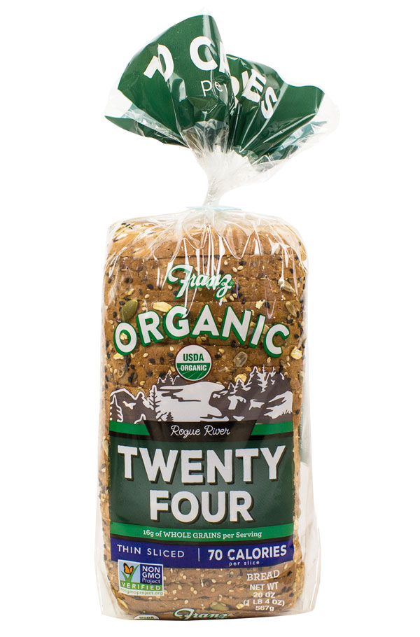

100% Whole Wheat
Bite into our hearty 100% whole wheat. Our wholesome recipe is crafted with wheat grown locally in the Pacific Northwest, for a fresh, home baked taste.
Nine Grain
Take home our delicious Nine Grain bread. We bake in nine unique grains to create a loaf that tastes as great as it looks.
Great Seed
Treat yourself to the fresh taste of Great Seed. This loaf is packed with a tasty, special blend of seeds that leaves taste buds happy.
Twenty-Four
Enjoy our tasty and wholesome Twenty-Four Bread. Overflowing with 24 hearty grains and seeds this loaf has a rich texture and taste that can’t be beat.
Honey Oat
Thin Sliced
Savor the hearty taste of our Honey Oat Thin Sliced Bread. Baked with honey, steel-cut oats, wheat and a bounty of sunflower seeds, it has a taste that can't be beat. Only 70 calories per slice.
Twenty-Four
Thin Sliced
Enjoy our tasty and wholesome Twenty-Four Thin Sliced Bread. Overflowing with 24 hearty grains and seeds this loaf is full of flavor and only 70 calories per slice.
Great Seed
Thin Sliced
Treat yourself to the fresh taste of Great Seed Thin Sliced bread. This loaf is packed with a hearty, special blend of seeds that leaves the taste buds happy, and at only 80 calories per slice.
Whole Wheat Buns
Build a better hamburger with our tasty organic buns. Our wholesome recipe is crafted with quality ingredients to make the perfect canvas for any burger.
Hot Dog Buns
Our organic hot dog buns are perfect for your next BBQ. Pile on your favorite toppings, relax and enjoy!

Hamburger Buns
Build a better hamburger with our tasty organic buns. Our wholesome recipe is crafted with quality ingredients to make the perfect canvas for any burger.